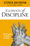
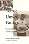
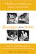

|
At
a Loss for Words
How America Is Failing Our Children and What We Can Do about
It
Bardige, Betty, foreword by T. Berry Brazelton, M.D.
272 pp • 6x9 • Spring 2005
paper 978-1-59213-393-2
cloth 978-1-59213-392-5
|

|
Inheritance
Law and the Evolving Family
Brashier, Ralph C.
272 pp • 6x9 • Fall 2003
paper 978-1-59213-222-5
cloth 978-1-59213-221-8
|

|
Reframing Transracial Adoption
Korean Adoptees, White Parents and the Politics of Kinship
Brian, Kristi
230 pp • 6x9 • Spring 2012
paper 978-1-4399-0184-7
cloth 978-1-4399-0183-0
|
 |
Family and Work in Everyday Ethnography
edited by Brown, Tamara Mose and Joanna Dreby
228 pp • 5.5x8.25 • Fall 2013
paper 978-1-4399-1076-4
cloth 978-1-4399-1075-7 |

|
A
Pleasing Birth
Midwives and Maternity Care in the Netherlands
De Vries, Raymond
296 pp • 6x9 • Fall 2004
paper 978-1-59213-103-7
cloth 978-1-59213-102-0
|

|
Taking
Time
Parental Leave Policy and Corporate Culture
Fried, Mindy
256 pp • 5.5x8.25 • Fall 1998
paper 978-1-56639-647-9
cloth 978-1-56639-646-2
|

|
Families
and Work
edited by Gerstel, Naomi and Harriet Engel Gross
576 pp • Spring 1987
paper 978-0-87722-469-3
cloth 978-0-87722-467-9 |
|  |
Elements of Discipline
Nine Principles for Teachers and Parents
Greenspan, Stephen, foreword by Arnold Sameroff
214 pp • 6x9 • Fall 2012
paper 978-1-4399-0897-6
cloth 978-1-4399-0896-9
|

|
Families
in the U.S.
Kinship and Domestic Politics
edited by Hansen, Karen V. and Anita Ilta Garey
944 pp • 7x10 • Spring 1998
paper 978-1-56639-590-8
cloth 978-1-56639-589-2
|

|
Teen
Mothers and the Revolving Welfare Door
Harris, Kathleen Mullan, foreword by Frank F. Furstenberg,
Jr.
224 pp • 5.5x8.25 • Fall 1996
cloth 978-1-56639-499-4 |

|
Child,
Parent, and State
Law and Policy Reader
edited by Humm, Randall S., Beate Anne Ort, Martin Mazen Anbari,
Wendy S. Lader and William Scott Biel
712 pp • 7x10 • Spring 1994
paper 978-1-56639-134-4
cloth 978-1-56639-133-7
|
 |
Young
Unwed Fathers
Changing Roles and Emerging Policies
edited by Lerman, Robert I. and Theodora J. Ooms
360 pp • 6x9 • Spring 1993
paper 978-1-56639-318-8
cloth 978-1-56639-048-4
|
|  |
Messages from Home
The Parent-Child Home Program for Overcoming Educational Disadvantage
Levenstein, Phyllis and Susan Levenstein
Revised and Updated Edition
288 pp • 6x9 • Spring 2008
paper 978-1-59213-677-3
cloth 978-1-59123-676-6
|

|
Family
Ties
Enduring Relations between Parents and Their Grown Children
Logan, John R. and Glenna D. Spitze
304 pp • 6x9 • Fall 1996
paper 978-1-56639-472-7
cloth 978-1-56639-471-0 |

|
Women
and Stepfamilies
Voices of Anger and Love
edited by Maglin, Nan Bauer and Nancy Schniedewind
448 pp • Fall 1988
paper 978-0-87722-782-3
cloth 978-0-87722-586-7 |

|
Selling Transracial Adoption
Families, Markets, and the Color Line
Raleigh, Elizabeth
274 pp • 6x9 • Fall 2017
paper 978-1-4399-1478-6
cloth 978-1-4399-1477-9
|

|
Help
Your Marriage Survive the Death of a Child
Rosenblatt, Paul C.
200 pp • 5.5x8.25 • Fall 2000
paper 978-1-56639-805-3
cloth 978-1-56639-804-6
|
 |
Getting Paid While Taking Time
The Women's Movement and the Development of Paid Family Leave Policies in the United States
Sholar, Megan A.
252 pp • 5.5x8.25 • Fall 2016
paper 978-1-4399-1295-9
cloth 978-1-4399-1294-2
|

|
I
Can't Remember
Family Stories of Alzheimer's Disease
Smoller, Esther Strauss, foreword by Kathleen O'Brien
136 pp • 7x10 • Fall 1997
cloth 978-1-56639-555-7
|

|
Women,
Employment and Family in the International Division of Labour
edited by Stichter, Sharon and Jane L. Parpart
288 pp • Spring 1990
cloth 978-0-87722-739-7 |

|
Before
Their Time
Adult Children's Experiences of Parental Suicide
edited by Stimming, Mary and Maureen Stimming
240 pp • 5.5x8.25 • Fall 1998
paper 978-1-56639-655-4
cloth 978-1-56639-654-7
|

|
The
Package Deal
Marriage, Work, and Fatherhood in Men's Lives
Townsend, Nicholas W.
264 pp • 6x9 • Spring 2002
paper 978-1-56639-958-6
cloth 978-1-56639-957-9
|

|
Men Can
The Changing Image and Reality of Fatherhood in America
Unger, Donald N. S.
240 pp • 5.5x8.25 • Spring 2010
cloth 978-1-43990-000-0
|

|
The
Thinking about the Baby
Gender and Transitions into Parenthood
Walzer, Susan
224 pp • 5.5x8.25 • Fall 1998
paper 978-1-56639-631-8
cloth 978-1-56639-630-1
|